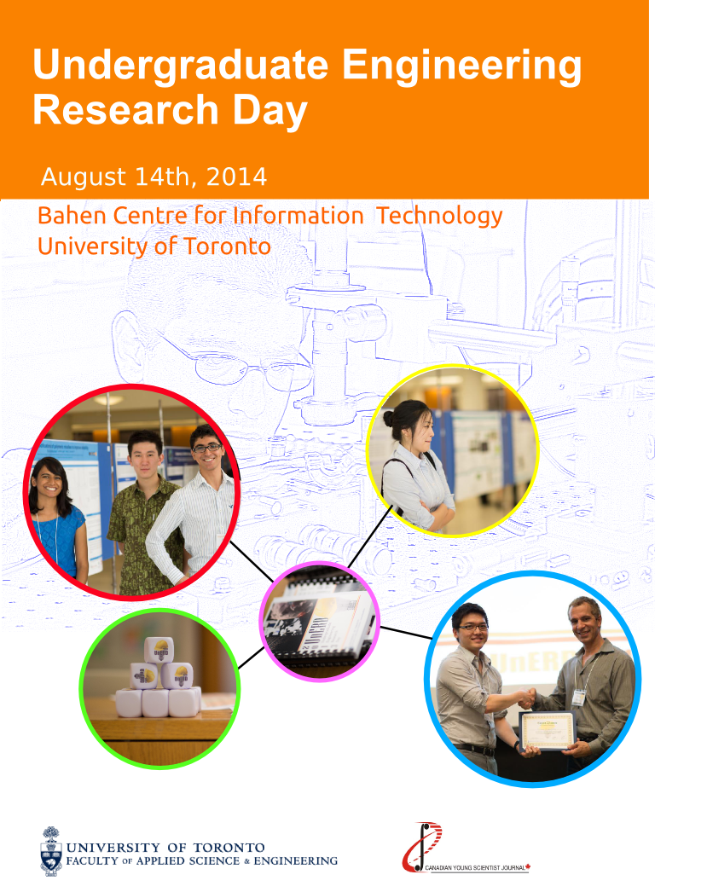
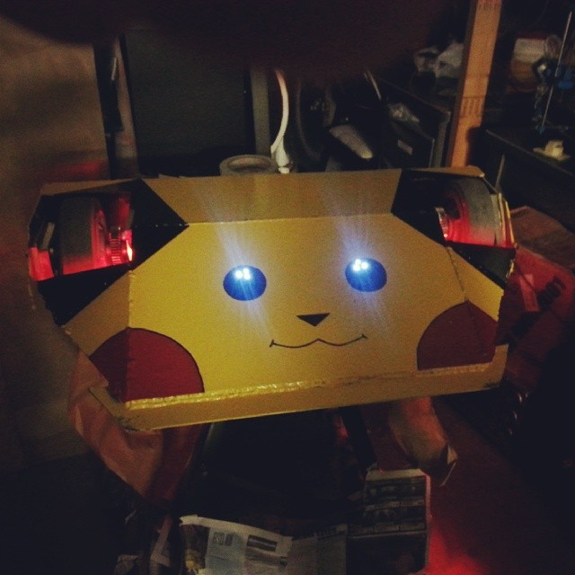
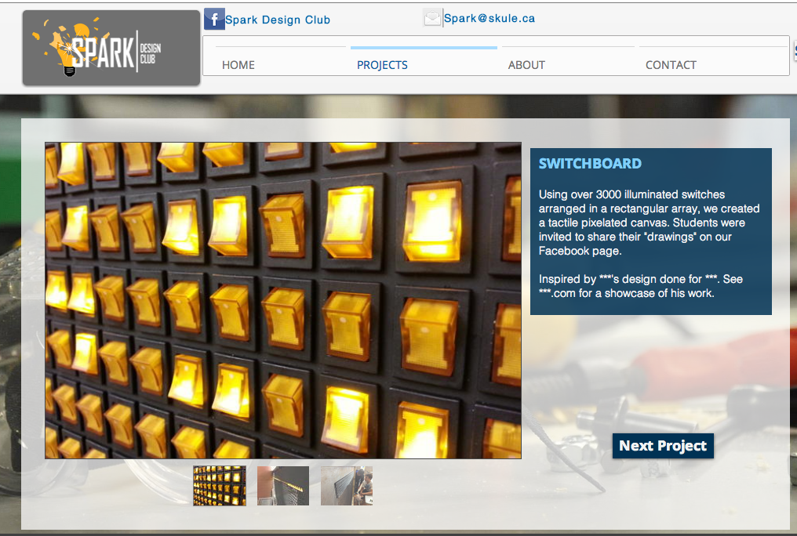
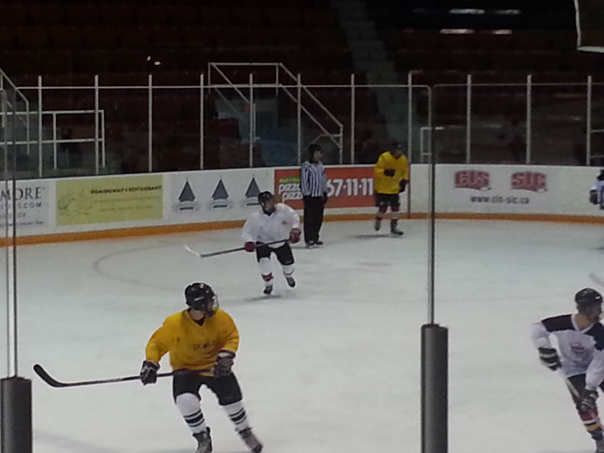

Involved with Spark (Design Club), UTRA and part of the Undergraduate Research Day Commitee (UnERD)
As an engineering student, I try to balance out between my social and academic life. As a student interested who enjoys creating and designing products and even playing sports, I like to join clubs that involve my creativity and thinking skills. As the courses I take in upper years become more interesting, I hope that I will be able to contribute more towards the clubs.
From these extra-curriculars, I have met new people of different background, engineering disciplines and event art-scis. Most importantly, I learnt how to work as a team regardless of the skill and knowledge level of different members, learning new skills from them and teaching them other skills. During my first 2 years, I have been involved in some clubs due to my personal interests. While I struggled academically as froshie (1st year) adjusting into the university environment, I hope that in the coming years I will be able to participate in more engineering-related clubs
UnERD

UTRA

Spark

UT Intramurals

Skule Courses
The tables below are the courses I have taken or am currently taken. Due to the curriculum flexibility third and fourth year, there is no particular order of courses taken.
For an official description of the courses, please refer to this link NB: Course curriculums/descriptions may change each year
3rd Year
An introduction to more practical applications of electrical and computer engineering. Courses include Analog and Digital Electronics, Computer Netowrks, Algorithms and Data Structure and Operating Systems
2nd Semester (Sring 2015)
Course Code
Course Name
Course Description
ECE344
Operating Systems
ECE331
Analog Electronics
ECE334
Digial Electronics
ECE361
Networks I
JRE300
Introduction to Fundamentals of Accounting and Financing
1st Semester (Fall 2014)
Course Code
Course Name
Course Description
ECE345
Algorithms and Data Structures
Introduction to discrete mathematics, and common data structions and their algorithms such as graphs (Dijkstra's and Bellman-Ford), trees (minimum-spanning trees) and common searching/sorting algorithms such as Radix, Binary; HeapSort and QuickSort Algorithmic analysis such as Big-O notation, Master's Theorem and induction covered
ECE311
Linear Systems and Dynamic Control
Applied linear algebra to solve single input and ouput control systems. Introduction to BIBO and internal stability, Nyquist and Bode plots
ECE302
Probability and Statistics
Discrete and continous distributions, covering: Bionmial, Bernoulli, Uniform; Gaussian, Laplacian, Exponential. Topics include single and double variable distributions
ECE320
Fields and Waves
Introduction to electric phenomena such as Transmission Lines and Smith Charts. Continuation of ECE221, covering E&M waves from Maxwell's equation and introduction to TE, TM and TEM waves.
ECE314
Fundamentals of Electrical Energy Systems
Study of power converters from AC to DC, introduction of H-bridges, energy analysis of both transformers (magnetic circuits) and electro-mechanics (motors and inductors)
2nd Year
Further development of fundamentals from first year. Introduction and appreciation of electrical engineering concepts
2nd Semester (Winter 2014)
Course Code
Course Name
Course Description
ECE216
Signals and Systems-
Introduction to signal manipulation using time and frequency domain, such as Fourier Analysis and Convolution
ECE243
Computer Organization-
Understanding the basics of Assembly language to manipulate data between I/O devices and register allocations. Currently using NIOSII developed by Altera
ECE231
Introductory Electronics-
Introduction to basic electronic devices and their practical limitations: OP-AMPs, transistors and diodes
ECE297
Communications Course-
Communication course involving an implementation of a server in C. This is an extension of APS111 and APS112 but with more oriented towards ECE. This course produces 2 deliverables: a design documentation and a program
ECE221
Electromagnetics
Study the phenomena of Electric Fields: Gauss' Law, capacitance, Joule's Law
1st Semester (Fall 2013)
Course Code
Course Name
Course Description
ECE212
Circuits
Extension of ECE110. Introduction to Op-Amps and power transfer with applications of Laplace transforms to solve RCL circuits
ECE241
Digital Logic
Introduction to logic gates and their applications in digital hardware. Learnt basics building blocks, such as MUXes, adders and regsters. This course also introduced Verilog, with labs using Altera's DEII Board. A mini group project was demonstrated at the end to apply hardware knowledge
ECE244
Programming Fundamentals
Introduction to object oriented program (OOP). This course "extends" from APS105, with the introduction of classes- polymorphism and inheritance; and with a bit of algorithm analysis
MAT290
Advanced Engineering Maths
Introduction to differential equations, Laplace Transforms and complex-plane analysis
MAT291
Calculus III
Extentsion of MAT197. This course covers the topics of 3D curves- vector calculus and integration. Studied the use of triple integrals over different co-ordinate systems plus theories such as the Divergence and Stoke's theorem
1st Year
Review and introduction of new concepts mathematics, chemistry and physics from high school. Introduction to C programming and the design process
2nd Semester (Winter 2013)
Course Code
Course Name
Course Description
APS104
Intro to Chemistry
Introduction to the basic concepts of materials science and thermodynamics
APS112
Engineering Strategies and Practice II
Extentsion of APS112. This course involved producing deliverables to a real client. As a group, we were assigned to investigate the feasibility of installing solar panels at the client's house in Whitchurch-Stouffville, ON.
MAT197
Calculus II
Studied different technqiues to solve integration, such as by substituion, parts and trigonometry. This course also introduces to the analysis of series, such as Taylor (and Maclaurian) as well as the tests to determine if such series converges or diverges
MIE100
Dynamics
Introduction to the applications of simple integration to everyday physics. The source covers the concept of velocity within a rigid body under different co-ordiante systems and the study of energy. The course then extends to more abstract concepts such as rotational and translation motion of rigid bodies
ECE110
Electrical Fundamentals
This course introduces 2 areas: the physics of electricity (electric and magnetic fields- Gauss' Law, Biot-Savart Law, etc.) and its applications (resistors, inductors, capacitors- nodal and mesh analysis, transient analysis, etc.)
-
1st Semester (Fall 2012)
Course Code
Course Name
Course Description
APS105
Intro to Programming
Introduction to programming in C. Learnt the basics concepts of functions, searching algorithms and dynamic memory allocation
APS111
Engineering Strategies and Practice I
Introduction to the styles of engineering reports
MAT196
Calculus I
High school review of limits and their applications to calculus
CIV100
Mechanics
Basic appliactions and study of forces onto structures
MAT188
Linear Algebra
Introduction to Eigenvalues, adjoint matrix and othrogonaliy